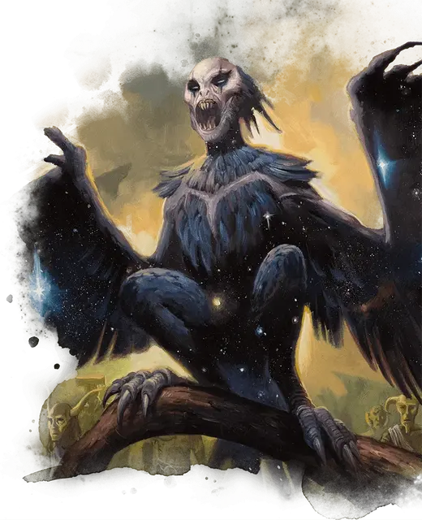

Афемия
Aphemia
Средний Монстр, хаотично-злой

Класс Доспеха 15 (природный доспех)
Хиты 52 (8к8 + 16)
Скорость 20 футов, летая 50 футов
| мод | спас | ||
|---|---|---|---|
| СИЛ | 13 | +1 | +1 |
| ЛОВ | 16 | +3 | +6 |
| ТЕЛ | 15 | +2 | +2 |
| мод | спас | ||
|---|---|---|---|
| ИНТ | 13 | +1 | +1 |
| МДР | 14 | +2 | +2 |
| ХАР | 16 | +3 | +6 |
Навыки Восприятие +5, Запугивание +6, Магия +4
Сопротивление урону некротическая энергия
Иммунитет к состояниям испуг, очарование
Чувства тёмное зрение 120 футов, пассивное Восприятие 15
Языки Общий
Опасность 5 (1800 опыта)
Бонус мастерства +3
Особенности
Легендарное сопротивление (2/день). Если Афемия проваливает спасбросок, он может вместо этого сделать спасбросок успешным.
Сопротивление магии. Афемия совершает с преимуществом спасброски от заклинаний и прочих магических эффектов.
Действия
Мультиатака. Афемия совершает две атаки: одну Укусом и одну Когтями.
Укус. . Рукопашная атака оружием: +6 к попаданию, досягаемость 10 футов, одна цель. Попадание: 8 (2к4 + 3) колющего урона, плюс 13 (3к8) урона некротической энергией.
Когти. . Рукопашная атака оружием: +6 к попаданию, досягаемость 10 футов, одна цель. Попадание: 10 (2к6 + 3) рубящего урона.
Нестройная песня. Афемия издает какофонию магических звуков. Каждый гуманоид в пределах 120 футов должен преуспеть в спасброске Мудрости Сл 14, иначе станут испуганы ею, пока песня не закончится. Испуганное существо получает 7 (2к6) урона психической энергией в начале каждого своего хода, пока Афемия поёт. Испуганное существо может повторять спасбросок в конце каждого своего хода, оканчивая на себе эффект в случае успеха. Если спасбросок существа успешен или эффект для него заканчивается, существо становится невосприимчивым к Диссонирующей песне Афемии в течение следующих 24 часов. Афемия должна использовать своё бонусное действие на своих последующих ходах, чтобы поддерживать пение. Она может перестать петь в любой момент. Песня заканчивается, если Афемия становится недееспособной или умирает.
Песнь зовущая в могилу. Афемия напевает низкую, рокочущую волшебную мелодию. Вся нежить в пределах 300 футов от нее должна совершить спасбросок Мудрости Сл 14, иначе попадает под её контроль, пока песня не закончится. Афемия должна использовать своё бонусное действие на своих последующих ходах, чтобы поддерживать пение, и она может мысленно командовать нежитью, находящейся под её контролем, частью того же бонусного действия. Она может перестать петь в любой момент. Песня заканчивается, если Афемия становится недееспособной или умирает.
Описание
Среди заболоченных пустошей вокруг Асфодели рыщет печально известная никторождённая гарпия по имени Афемия. Своими визгливыми пронзительными песнями она завораживает немёртвых обитателей некрополя, которые по её велению подстерегают неосторожных путников и совершают набеги на близлежащие деревни.
Гарпии
Жестокие, трупоеды, гарпии бесконечно ищут свою следующую еду, не заботясь о том, является ли она живой или мертвой. С одинаковым рвением эти злобные падальщики нападают на путешественников или раскапывают свежие могилы, лишая тела богатств и плоти. Затем они уносят любые сокровища или привлекательные кости, которые находят, в вонючие гнезда, расположенные в тесных пещерах или на гнилых деревьях.